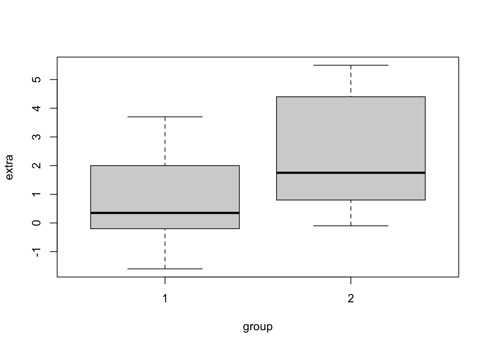
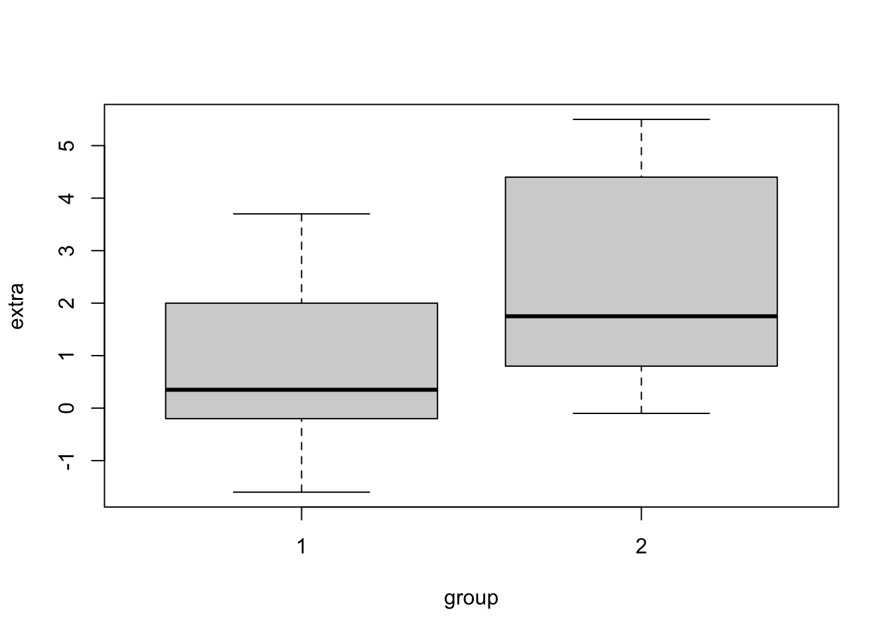
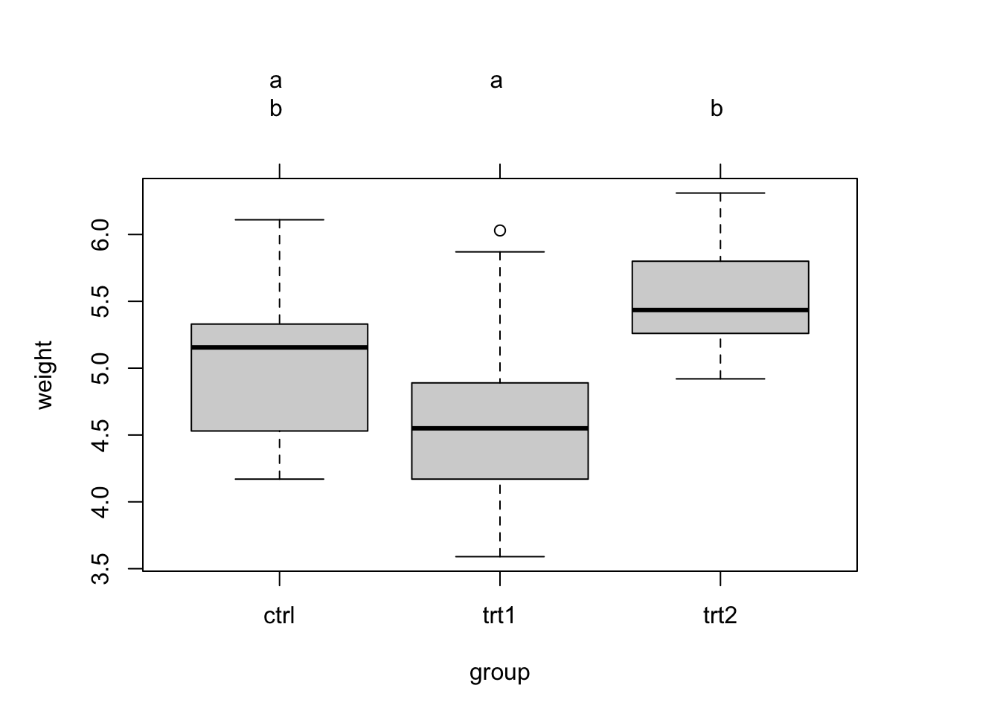
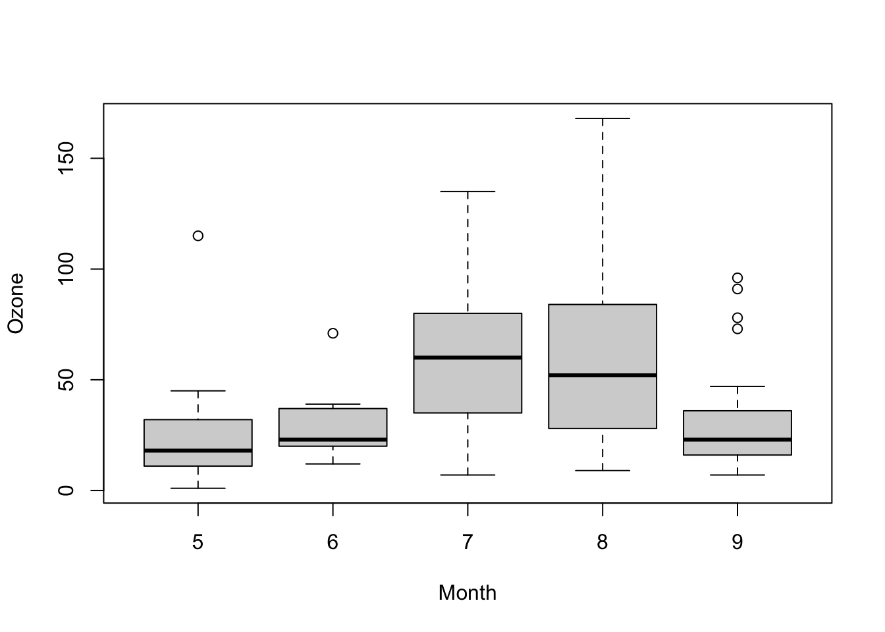

## Classical example: Student's sleep data
plot(extra ~ group, data = sleep)
In this exercise you will:
The first three sections, provide an overview over the most important hypothesis tests, a guideline to select an appropriate test (see decision tree) and the necessary code to apply these tests in R. It is not necessary to read and understand every detail. These explanations are also meant as an advice if you want to select an appropriate hypothesis test after the course. Note that some of the examples use simulated data instead of real observation (all functions that start with r=random, e.g. rnorm() or runif()). Simulated data is useful, because then we know the true distribution and its true mean.
In the fourth section at the end of this file, you find exercises that you should solve using the explanations above. It may be helpful to use the table of content and/or the search option to find the respective example in the explanations.
Many tests aim at showing that variables are significantly different between groups, i.e. have different means/medians. In all these tests, H0 is that there is no difference between the groups. The following decision tree helps to select the appropriate test.
Decision tree for the comparison of two groups
Remark 1: Tests for 2 groups also work for one group only. Then they test whether the mean is equal to 0.
Remark 2: Paired / unpaired: this means that observations in the groups are linked to each other. An example for unpaired data is a typical experiment with 10 observations in the control group and 10 observations in the treatment group. An example for paired data is when the same individuals were exposed to the treatment and to the control. The observations of each individual would belong together (pairs).
Remark 3: Parametric: assumption of normal distribution. Non-parametric = no assumption for the distribution.
Remark 4: Blue text: If a test for more than two groups is significant, post-hoc tests are carried out in a second step. These check all possible comparisons of groups for significant differences by adjusting p-values for multiple testing.
The t-test can draw conclusions about the mean(s) of 1 or 2 normally-distributed groups.
## Classical example: Student's sleep data
plot(extra ~ group, data = sleep)
Be aware: The line in the box plot does not show the mean but the median.
## Formula interface
t.test(extra ~ group, data = sleep)
##
## Welch Two Sample t-test
##
## data: extra by group
## t = -1.8608, df = 17.776, p-value = 0.07939
## alternative hypothesis: true difference in means between group 1 and group 2 is not equal to 0
## 95 percent confidence interval:
## -3.3654832 0.2054832
## sample estimates:
## mean in group 1 mean in group 2
## 0.75 2.33This output tells us, that the difference in means between the 2 groups is not significant(p-value ≥ 0.05, specifically: p-value = 0.07939), provided that our significance level is 0.05.
The underlying Null-hypothesis is that the true difference in means is equal to 0. In the last two lines of the output you can see the means of the respective groups. Even though the means seem to be quite different, the difference is not significant, this could be due to the small sample size of only 10 students per group.
Let’s look at different settings of the t-test:
The Null-hypothesis here is that the mean of the observed group is equal to 0.
x = rnorm(20, mean = 2)
t.test(x)
##
## One Sample t-test
##
## data: x
## t = 7.4679, df = 19, p-value = 4.587e-07
## alternative hypothesis: true mean is not equal to 0
## 95 percent confidence interval:
## 1.577591 2.806249
## sample estimates:
## mean of x
## 2.19192p-value < 0.05 means we can reject the Null-hypothesis, i.e. the mean of the observed group is significantly different from 0.
The Null-hypothesis here is that the two observed groups have the same mean and the same variance (specified by the argument var.equal = T).
x1 = rnorm(20, mean = 2)
x2 = rnorm(20, mean = 3)
t.test(x1,x2, var.equal = T)
##
## Two Sample t-test
##
## data: x1 and x2
## t = -3.7626, df = 38, p-value = 0.0005672
## alternative hypothesis: true difference in means is not equal to 0
## 95 percent confidence interval:
## -1.9534247 -0.5867374
## sample estimates:
## mean of x mean of y
## 1.729008 2.999089The Null-hypothesis here is that the two observed groups have the same mean and variable variances (the default setting of the argument var.equal = F).
x1 = rnorm(20, mean = 2, sd = 1)
x2 = rnorm(20, mean = 3, sd = 2)
t.test(x1,x2)
##
## Welch Two Sample t-test
##
## data: x1 and x2
## t = -2.2345, df = 26.177, p-value = 0.0342
## alternative hypothesis: true difference in means is not equal to 0
## 95 percent confidence interval:
## -1.92593937 -0.08068265
## sample estimates:
## mean of x mean of y
## 2.160601 3.163912The Null-hypothesis here is that the two groups are paired observations (e.g. group 1 before treatment and group 2 after treatment) have the same mean and variable variance (specified by the argument var.equal = F, which is also the default setting).
x1 = rnorm(20, mean = 2)
x2 = rnorm(20, mean = 3)
t.test(x1,x2, paired = T, var.equal = F)
##
## Paired t-test
##
## data: x1 and x2
## t = -2.0252, df = 19, p-value = 0.05713
## alternative hypothesis: true mean difference is not equal to 0
## 95 percent confidence interval:
## -1.40778309 0.02318272
## sample estimates:
## mean difference
## -0.6923002In R, there is only one function for both tests together: wilcox.test(). The Wilcoxon rank sum test with (paired = F) is classically called Mann-Whitney U test.
x1 = rnorm(20, mean = 2)
x2 = rlnorm(20, mean = 3)
wilcox.test(x1, x2)
##
## Wilcoxon rank sum exact test
##
## data: x1 and x2
## W = 0, p-value = 1.451e-11
## alternative hypothesis: true location shift is not equal to 0x1 = rnorm(20, mean = 2)
x2 = rlnorm(20, mean = 3)
wilcox.test(x1, x2, paired = T)
##
## Wilcoxon signed rank exact test
##
## data: x1 and x2
## V = 0, p-value = 1.907e-06
## alternative hypothesis: true location shift is not equal to 0H0 >2 groups, normal distribution, equal variance, equal means, unpaired
x = aov(weight ~ group, data = PlantGrowth)
summary(x)
## Df Sum Sq Mean Sq F value Pr(>F)
## group 2 3.766 1.8832 4.846 0.0159 *
## Residuals 27 10.492 0.3886
## ---
## Signif. codes: 0 '***' 0.001 '**' 0.01 '*' 0.05 '.' 0.1 ' ' 1An ANOVA only tests, if there is a difference, but not between which groups. To perform pairwise comparisons, you can use post-hoc tests. Common for ANOVA results is
TukeyHSD(x)
## Tukey multiple comparisons of means
## 95% family-wise confidence level
##
## Fit: aov(formula = weight ~ group, data = PlantGrowth)
##
## $group
## diff lwr upr p adj
## trt1-ctrl -0.371 -1.0622161 0.3202161 0.3908711
## trt2-ctrl 0.494 -0.1972161 1.1852161 0.1979960
## trt2-trt1 0.865 0.1737839 1.5562161 0.0120064Alternatively, you can also perform several tests each comparing two groups and then correct for multiple testing. This is what we did before.
Pairwise comparisons are often visualized using different letters to significantly different groups:
# install.packages("multcomp")
library(multcomp)
tuk = glht(x, linfct = mcp(group = "Tukey")) #performs Tukey pairwise comparisons
tuc.cld = cld(tuk) # assigns different letters to significantly different groups
old.par = par(mai = c(1, 1, 1.25, 1), no.readonly = T)
plot(tuc.cld) # draws boxplot + letters from cld function
par(old.par)aov is not good in doing repeated = paired ANOVA. For this task, you should use so-called mixed models!
Non-parametric test for differences in the mean of >2 groups, unpaired
boxplot(Ozone ~ Month, data = airquality)
kruskal.test(Ozone ~ Month, data = airquality)
##
## Kruskal-Wallis rank sum test
##
## data: Ozone by Month
## Kruskal-Wallis chi-squared = 29.267, df = 4, p-value = 6.901e-06Non-parametric test for differences in the mean of >2 groups, paired.
wb <- aggregate(warpbreaks$breaks,
by = list(w = warpbreaks$wool,
t = warpbreaks$tension),
FUN = mean)
#wb
friedman.test(wb$x, wb$w, wb$t)
##
## Friedman rank sum test
##
## data: wb$x, wb$w and wb$t
## Friedman chi-squared = 0.33333, df = 1, p-value = 0.5637
# Alternative: friedman.test(x ~ w | t, data = wb)
# Note that x is the response, w is the group, and t are the blocks that are pairedH0 in variance tests is always that the variances are equal.
x <- rnorm(50, mean = 0, sd = 2)
y <- rnorm(30, mean = 1, sd = 1)
var.test(x, y) # Do x and y have the same variance? - Significantly different
##
## F test to compare two variances
##
## data: x and y
## F = 6.9377, num df = 49, denom df = 29, p-value = 3.998e-07
## alternative hypothesis: true ratio of variances is not equal to 1
## 95 percent confidence interval:
## 3.485685 13.052795
## sample estimates:
## ratio of variances
## 6.937749x <- rnorm(50, mean = 0, sd = 1)
y <- rnorm(30, mean = 1, sd = 1)
z <- rnorm(30, mean = 1, sd = 1)
bartlett.test(list(x, y, z)) # Do x, y and z have the same variance? - Not sigificantly different
##
## Bartlett test of homogeneity of variances
##
## data: list(x, y, z)
## Bartlett's K-squared = 1.6542, df = 2, p-value = 0.4373Proportions are typically analyzed assuming the binomial model (k/n with probability p)
H0 is that the data are binomially distributed with a fixed probability p.
## Conover (1971), p. 97f.
## Under (the assumption of) simple Mendelian inheritance, a cross
## between plants of two particular genotypes produces progeny 1/4 of
## which are "dwarf" and 3/4 of which are "giant", respectively.
## In an experiment to determine if this assumption is reasonable, a
## cross results in progeny having 243 dwarf and 682 giant plants.
## If "giant" is taken as success, the null hypothesis is that p =
## 3/4 and the alternative that p != 3/4.
binom.test(c(682, 243), p = 3/4)
##
## Exact binomial test
##
## data: c(682, 243)
## number of successes = 682, number of trials = 925, p-value = 0.3825
## alternative hypothesis: true probability of success is not equal to 0.75
## 95 percent confidence interval:
## 0.7076683 0.7654066
## sample estimates:
## probability of success
## 0.7372973
binom.test(682, 682 + 243, p = 3/4) # The same.
##
## Exact binomial test
##
## data: 682 and 682 + 243
## number of successes = 682, number of trials = 925, p-value = 0.3825
## alternative hypothesis: true probability of success is not equal to 0.75
## 95 percent confidence interval:
## 0.7076683 0.7654066
## sample estimates:
## probability of success
## 0.7372973
## => Data are in agreement with H0based on Chi-squared-test, H0 is that the data in two groups are binomially distributed with the same probability p.
## Data from Fleiss (1981), p. 139.
## H0: The null hypothesis is that the four populations from which
## the patients were drawn have the same true proportion of smokers.
## A: The alternative is that this proportion is different in at
## least one of the populations.
smokers <- c( 83, 90, 129, 70 )
patients <- c( 86, 93, 136, 82 )
prop.test(smokers, patients)
##
## 4-sample test for equality of proportions without continuity correction
##
## data: smokers out of patients
## X-squared = 12.6, df = 3, p-value = 0.005585
## alternative hypothesis: two.sided
## sample estimates:
## prop 1 prop 2 prop 3 prop 4
## 0.9651163 0.9677419 0.9485294 0.8536585
## => Data are not in agreement with H0Chi-squared-test for count data, H0 is that the joint distribution of the cell counts in a 2-dimensional contingency table is the product of the row and column marginals
## From Agresti(2007) p.39
M <- as.table(rbind(c(762, 327, 468), c(484, 239, 477)))
dimnames(M) <- list(gender = c("F", "M"),
party = c("Democrat","Independent", "Republican"))
chisq.test(M)
##
## Pearson's Chi-squared test
##
## data: M
## X-squared = 30.07, df = 2, p-value = 2.954e-07Often we are interested in the distribution of a variable. This can be tested with distribution tests. All these tests are defined as follows: H0 is that the data follow a specific distribution. So in case H0 is rejected, the data significantly deviates from the specified distribution.
Often, we want to know whether a variable is normally distributed because this is an important assumption for parametric hypothesis tests. But data can follow many other distributions:
Because many tests require normal distribution, this is the test needed most often.
shapiro.test(rnorm(100, mean = 5, sd = 3))
##
## Shapiro-Wilk normality test
##
## data: rnorm(100, mean = 5, sd = 3)
## W = 0.9874, p-value = 0.4649For everything else, the KS test can be used. It compares two different distributions, or a distribution against a reference.
x <- rnorm(50)
y <- runif(30)
# Do x and y come from the same distribution?
ks.test(x, y)
##
## Exact two-sample Kolmogorov-Smirnov test
##
## data: x and y
## D = 0.54, p-value = 1.598e-05
## alternative hypothesis: two-sided
# Does x come from a shifted gamma distribution with shape 3 and rate 2?
ks.test(x+2, "pgamma", 3, 2) # two-sided, exact
##
## Exact one-sample Kolmogorov-Smirnov test
##
## data: x + 2
## D = 0.35969, p-value = 2.674e-06
## alternative hypothesis: two-sided
ks.test(x+2, "pgamma", 3, 2, exact = FALSE)
##
## Asymptotic one-sample Kolmogorov-Smirnov test
##
## data: x + 2
## D = 0.35969, p-value = 4.81e-06
## alternative hypothesis: two-sided
ks.test(x+2, "pgamma", 3, 2, alternative = "gr")
##
## Exact one-sample Kolmogorov-Smirnov test
##
## data: x + 2
## D^+ = 0.068834, p-value = 0.5957
## alternative hypothesis: the CDF of x lies above the null hypothesisFor an overview on distribution see here: http://www.stat.umn.edu/geyer/old/5101/rlook.html
A test for the significance of a correlation:
cor.test(airquality$Ozone, airquality$Wind)
##
## Pearson's product-moment correlation
##
## data: airquality$Ozone and airquality$Wind
## t = -8.0401, df = 114, p-value = 9.272e-13
## alternative hypothesis: true correlation is not equal to 0
## 95 percent confidence interval:
## -0.7063918 -0.4708713
## sample estimates:
## cor
## -0.6015465Interpretation: Ozone and Wind are significantly negatively correlated with a p-value < 0.05 and a correlation coefficient of -0.6015465.
The Mantel test compares two distance matrices
library(vegan)
## Is vegetation related to environment?
data(varespec)
data(varechem)
veg.dist <- vegdist(varespec) # Bray-Curtis
env.dist <- vegdist(scale(varechem), "euclid")
mantel(veg.dist, env.dist)
##
## Mantel statistic based on Pearson's product-moment correlation
##
## Call:
## mantel(xdis = veg.dist, ydis = env.dist)
##
## Mantel statistic r: 0.3047
## Significance: 0.002
##
## Upper quantiles of permutations (null model):
## 90% 95% 97.5% 99%
## 0.118 0.152 0.178 0.201
## Permutation: free
## Number of permutations: 999
mantel(veg.dist, env.dist, method="spear")
##
## Mantel statistic based on Spearman's rank correlation rho
##
## Call:
## mantel(xdis = veg.dist, ydis = env.dist, method = "spear")
##
## Mantel statistic r: 0.2838
## Significance: 0.001
##
## Upper quantiles of permutations (null model):
## 90% 95% 97.5% 99%
## 0.119 0.156 0.183 0.206
## Permutation: free
## Number of permutations: 999